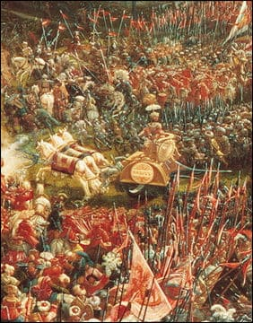

<table>
    <tr>
    <td>July 356 B.C - Born at Pella, Macedonia</td>
    
    <td>334 B.C - Wins battle against Darius III of persia</td>
    
    <td>331 B.C - Founds Alexandria</td>
    
    <td>323 B.C - Dies at Babylon</tr>
        

